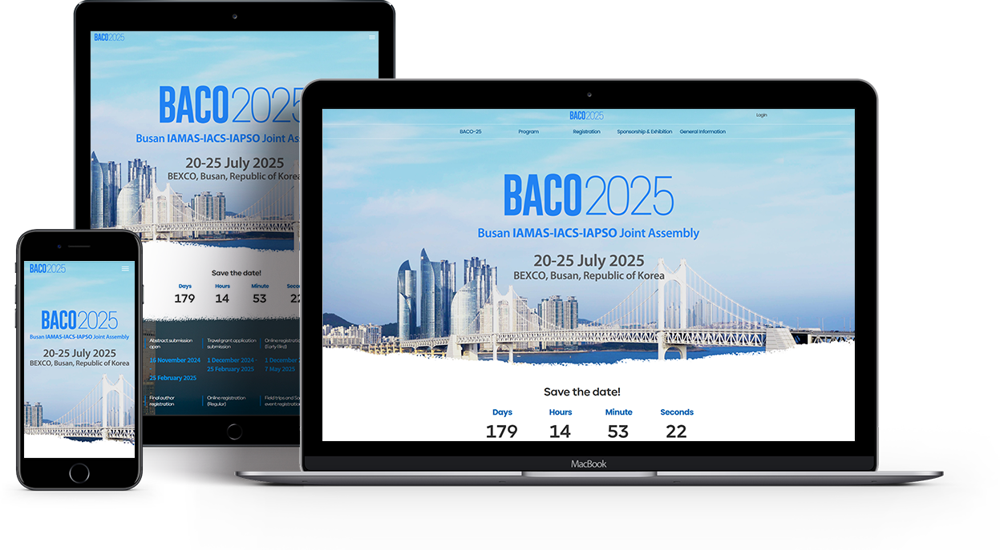

Year. 2024. 10 ~ 2024. 11
BACO-25는 지구 과학분야 국내 외 약 1,500명의 연구자들이 참여할 것으로 예상되는 대규모 학술대회로서
국제측지지구물리연맹(International Union of Geodesy and Geophysics) 산하의 IAMAS(기상학), IACS(빙권학),
IAPSO(해양물리학) 3개 분과 연합학회 주최의 종합 컨퍼런스입니다.
주최측에서는 기존 연구진들 뿐만아니라 일반인들의 참여도도 함께 높이고자 하였고,
누구나 홈페이지만 봐도 지구과학에 대한 행사라는 느낌을 받을 수 있도록 디자인해달라고
기존 홈페이지 전체 리뉴얼을 요청하였습니다.
디자인 100% + 퍼블리싱 100%
사각형의 컨텐츠들이 꽉 채워져있어서 답답한 느낌을 주며 포인트 컬러가 채도가 너무 높습니다.
메인화면에 중요 행사 일정에 관한 내용이 없어서 불편함을 줍니다.
지구 땅 표면 느낌의 디자인 요소를 메인에 넣었으며, 각 컨텐츠들마다 동적인 애니메이션 효과를 넣어서 활성화되고 있는 느낌을 주었습니다.
행사일정에 포인트 컬러를 줘서 가독성 있게 배치했습니다.
페이지를 볼때 부드럽게 넘어가도록 스무스한 스크롤 효과도 추가했습니다.
주최측에서 일반 타 학회 홈페이지랑은 다르게 아주 참신하다며 디자인과 가독성부분에서 매우 만족하는 평을 받았습니다.